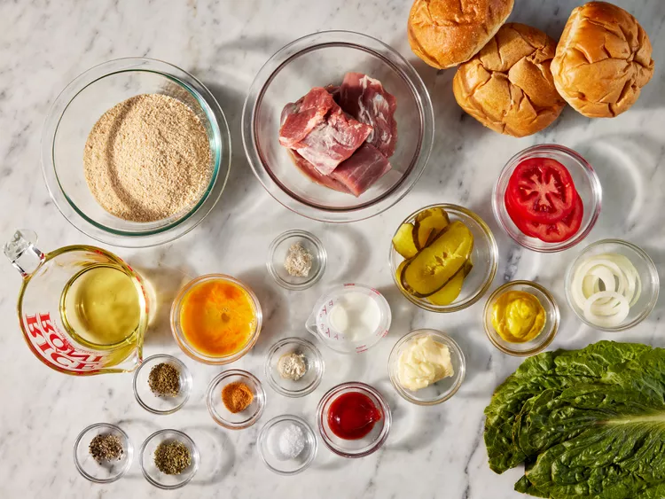
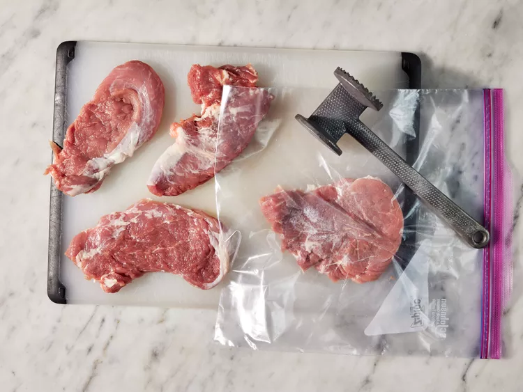
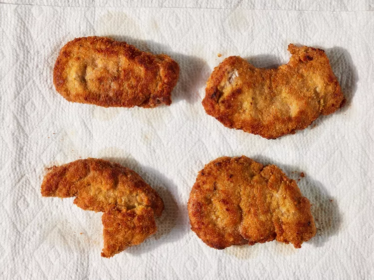
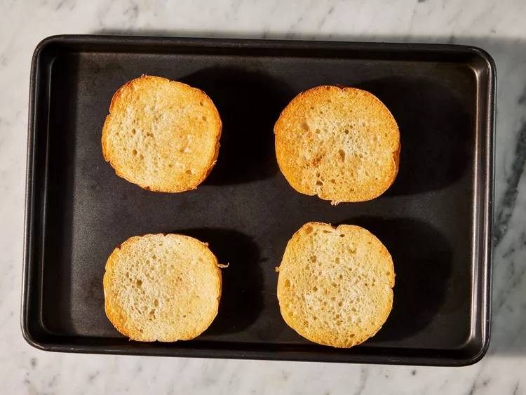
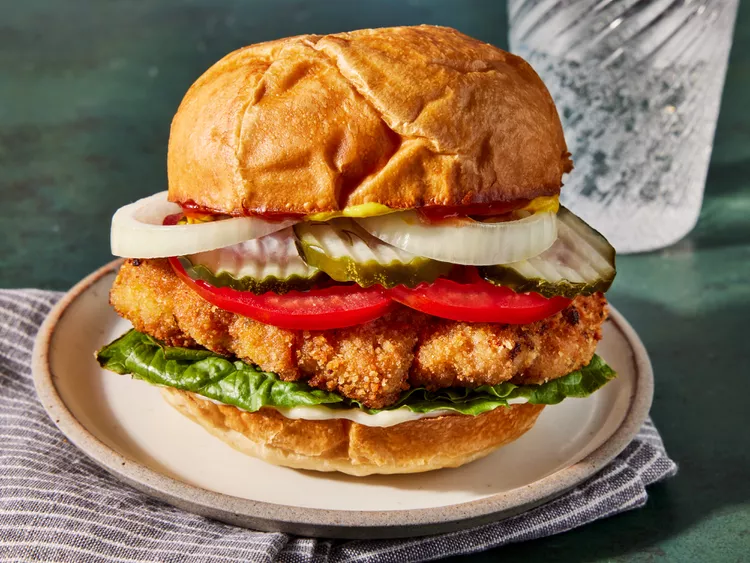

Harmburger
Ingredients:
- 4 (4 ounce) slices of pork tenderloin, cut across the grain
- 1 large egg, beaten
- 2 tablespoons milk
- 1 teaspoon salt
- ¼ teaspoon ground black pepper
- ¼ teaspoon garlic powder
- ¼ teaspoon onion powder
- ¼ teaspoon seasoned salt
- ¼ teaspoon dried marjoram
- ¼ teaspoon dried oregano
- 1 ½ cups bread crumbs
- ½ cup peanut oil for frying
- 4 kaiser rolls, split
- 4 teaspoons mayonnaise, or as needed (Optional)
- 4 teaspoons ketchup, or as needed (Optional)
4 teaspoons prepared yellow mustard, or as needed (Optional)
4 slices dill pickle (Optional)
4 slices onion (Optional)
4 slices tomato (Optional)
4 leaves lettuce (Optional)
Steps:
-
Gather all ingredients.

-
Flatten pork slices, one at a time, by placing in between two pieces of sturdy plastic and pounding with a meat mallet until 1/4-inch thick and about 3 1/2x5 inches in size.

-
Whisk egg and milk together in a shallow bowl; stir in salt, pepper, garlic powder, onion powder, seasoned salt, marjoram, and oregano until well blended. Place bread crumbs into another shallow bowl.
-
Dip each flattened cutlet into seasoned egg mixture, then dip into bread crumbs until thoroughly coated. Set breaded cutlets in a single layer on a piece of parchment or waxed paper.
-
Heat oil in a large skillet until shimmering. Gently lower cutlets into the hot skillet and fry until golden brown, about 4 minutes per side. Drain on paper towels.

-
Broil in the preheated oven until toasted and hot, about 1 minute.
-
Remove from the oven and assemble sandwiches: Place fried cutlets on roll bottoms.

-
Add toppings in the desired order: mayonnaise, ketchup, mustard, pickle, onion, tomato, and lettuce. Top sandwiches with roll tops and serve.
